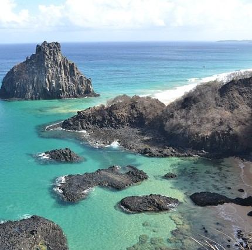

Fernando de Noronha, PE.

Fernando de Noronha is a good place to visit if you are looking for being in the nature. It is known for having the best beaches in Brazil. In addition, it also has a archipelago and some trails.